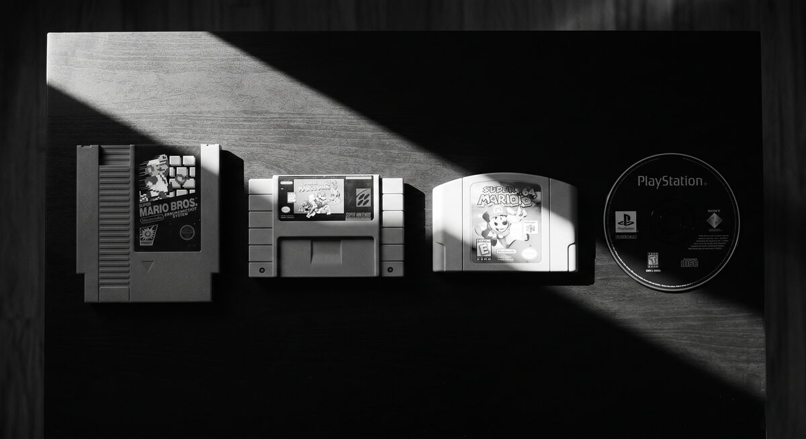

Getting started
What is a cartridge
Imagine the world is not a book but a box. Inside the box is everything without which the story cannot happen: a map of the city, the citizens' identity papers, notebooks of their secrets, rolled-up quest scrolls, a pouch of coins, a few important objects, and the sound and image of the world before the first line is spoken. You take the box, slot it into the Greenhaven engine, and the world comes alive.

That box is what we call a cartridge. The word comes from old console days, when a plastic cassette dropped into a slot changed the entire world inside the machine. Our box works on the same principle.
What a cartridge is made of
There are six kinds of things inside the box. They are not settings or spreadsheets. They are the meaningful building blocks out of which you assemble a living world.
Locations - places
These are everywhere you can stand, look around, walk into, and walk out of. A port. A central square. A tavern. The cellar of a warehouse. Every location has a first frame - what a person sees the moment they arrive - and exits - where they can go next.
NPCs - the people you talk to
NPC stands for "non-player character": anyone in the world who is not the hero. Merchants, companions, passers-by, enemies. For each one you write a character, a voice, a desire, and a fear. The engine remembers how each of them feels about the hero.
Quests - tasks and investigations
Not "go east and kill three rats." More like "find the witness, decide who gets protected, and live with the consequence." A quest has a beginning, steps, forks, rewards, and failure pressure.
Scenes - staged moments
Most of the time, the world improvises. But sometimes you want to stage a specific moment: the first meeting with the scout, the scuffle by the crates, the accusation in the square. That is a scene: a prepared sequence with a trigger, beats, choices, and consequences.
Items - things
A coin, a knife, a note, the cellar door. Anything the hero can look at, pick up, use, buy, or sell. Coins occupy a special place in the system: there are three currencies, and they have their own chapter.
Media - the world before the first word
Your cartridge can carry its own title-screen poster, title music, optional
title video, character portraits, location cards, item icons, scene plates,
animated webm cards, and local music cues. Media is not a separate database
you edit by hand. You place files next to the location, NPC, item, scene, or
boot folder that owns them, and the compiler imports them into the cartridge
asset cache.
How it all connects
These building blocks do not live in isolation. They nest inside one another like Russian dolls.
The port is a location.
- In the port lives @Tessa Wrenlight - a character.
- Tessa has scenes - a first meeting, a talk by the crates.
- Tessa has quests - find the compass, get into the guild.
- Tessa has media - portrait, dialogue theme, scene card.
- The port has scenes that belong to the place - an accusation at the gangway.
- The port has items - a notice on the board, the warehouse door.
- The cartridge has boot media - poster, title video, title music.
The location is the outermost doll. Inside it are people, place-owned scenes,
and items. Inside the people are their personal scenes and their own quests.
Everything is connected through names, and the names always start with @.
What an @ name is for
When you write "Tessa walks into the port," ordinary text understands nothing.
But if you write @Tessa Wrenlight walks into @Greenhaven Port, the engine
sees a connection. It records that Tessa is in the port, and later it can show
her to the player there.
So the name is not decoration and not a nickname. It is an address. The same
character is always written the same way. If you named her
@Tessa Wrenlight once, she has to be @Tessa Wrenlight everywhere. Do not
translate @ names.
How the engine reads your work
You write ordinary notes in Obsidian. You do not need to learn a programming language. You just file things into the right folders:
Locations/@Greenhaven Port/means: this is a location called@Greenhaven Port.PortMind.mdis the location's main note.npc/@Tessa Wrenlight/NPCMind.mdis Tessa's main note.npc/@Tessa Wrenlight/portraits/default.pngis Tessa's portrait.npc/@Tessa Wrenlight/music/tessa-wrenlight.mp3is Tessa's local music.GreenHavenWorld/media/boot/01.pngand01.mp3are cartridge title media.
Inside each file you write prose, broken up into sections by headings with two
hash marks: ## Identity, ## Voice, ## Want, ## Media Script. These
English words are the engine's signal flags. They tell it what the following
prose is for.
Things you should never do
- No bracketed settings blocks at the top of the file. If it looks like code or configuration, it belongs somewhere else.
- No invented numeric IDs. Do not write
id: 47orcode: AB-001. The@name is the identifier you need. - No technical language inside the prose. No SQL, no JSON, no API paths.
- Do not translate
@names.@Tessa Wrenlightstays@Tessa Wrenlightin every language. - No absolute media paths. Do not write
C:\Users\...\my-song.mp3in a note. Put the file into the cartridge, for examplemusic/tessa-wrenlight.mp3orGreenHavenWorld/media/boot/01.mp3.
What's next
You now know what is in the box. In the next chapter we assemble it: we set up a folder for the future world, drop in the first location and the first character. It takes fifteen minutes, and at the end you have something the engine can read.
Open Creating the vault.
Reference
Entity types and their file paths
| Type | File path |
|---|---|
| Location | Locations/.../@Name/<Name>Mind.md |
| Character | Locations/.../@Location/npc/@Name/NPCMind.md |
| Item | Locations/.../@Location/items/@Name/ItemMind.md |
| Quest | Locations/.../@Location/quests/Name.md or npc/@Name/quests/Name.md |
| Scene | Locations/.../@Location/scenes/@Scene.md or npc/@Name/scenes/@Scene.md |
| Media | portraits/, images/, music/, audio/, media/, or GreenHavenWorld/media/boot/ |
What the engine learns from the path: the entity type and ownership.
What the engine learns from headings: fields such as identity, voice, first-entry prose, quest stages, scene choices, materializers, and media scripts.
Names with @: required for anything other files refer to. Never
translated. Must be identical everywhere they appear.
Media: see Media: title screens, cards, video, and music
for exact file names, supported formats, title-screen bundles, and the
## Media Script commands.